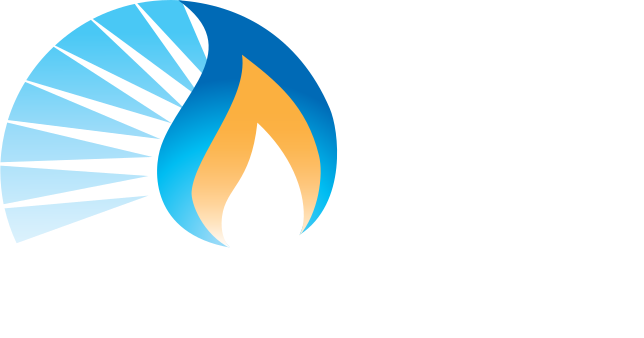

2-3 December 2020
GMI Steering Committee Meeting
Time
Zone Information
| Buenos Aires, ARG | Wednesday, 3 December 2020 at 8:00:00 am | UTC-3 hours |
| Canberra, AUS | Wednesday, 3 December 2020 at 9:00:00 pm | UTC+10 hours |
| Ottawa, CAN | Wednesday, 3 December 2020 at 7:00:00 am | UTC-4 hours |
| Beijing, CHI | Wednesday, 3 December 2020 at 7:00:00 pm | UTC+8 hours |
| Delhi, IND | Wednesday, 3 December 2020 at 4:30:00 pm | UTC+5:30 hours |
| Mexico City, MEX | Wednesday, 3 December 2020 at 6:00:00 am | UTC-5 hours |
| Paris, France | Wednesday, 3 December 2020 at 1:00:00 pm | UTC+2 hours |
| Abuja, NIG | Wednesday, 3 December 2020 at 12:00:00 noon | UTC+1 hour |
| Warsaw, POL | Wednesday, 3 December 2020 at 1:00:00 pm | UTC+2 hours |
| Washington, USA | Wednesday, 3 December 2020 at 7:00:00 am | UTC-4 hours |
| Corresponding UTC (GMT) | Wednesday, 3 December 2020 at 11:00:00 |
Steering Committee Meeting Session 2: 3 December 2020
11:00-14:00 UTC
Meeting Materials
- Presentations, summaries, and other meeting materials will be posted here.
Agenda
Below is the agenda for the virtual meeting.
| Session 2: 3 December 2020 | |
|
Agenda 1
07:00 |
Welcome, Opening of Meeting
Helen Ryan, Associate Assistant Deputy Minister, Environmental Protection Branch, Environment and Climate Change Canada; GMI Steering Committee Co-Chair |
|
Agenda 2
07:05 |
Secretariat Update
Monica Shimamura, Director, GMI Secretariat |
|
Agenda 3
07:15 |
Global Methane Challenge
Denise Mulholland, International Team Lead, U.S. Environmental Protection Agency |
|
Agenda 4
07:45 |
Re-Chartering of the GMI
Monica Shimamura and Jennifer Kerr, Director, Air Emissions Priorities, Legislative and Regulatory Affairs/Environmental Protection, Environment and Climate Change Canada |
|
Agenda 5
08:15 |
GMI Governance
Helen Ryan |
|
Agenda 6
08:45 |
Global Methane Forum
Monica Shimamura |
|
Agenda 7
09:00 |
Next Steps
Helen Ryan and Monica Shimamura |
|
Agenda 8
09:10 |
Closing Remarks
Helen Ryan |
| 09:15 | Adjourn |